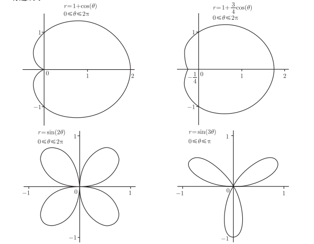
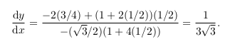
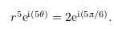
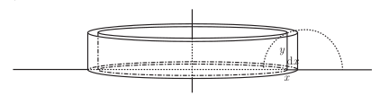
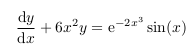
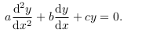

本文是微积分复习的最后一篇，教材使用《普林斯顿微积分读本》，涵盖第27章-第30章的内容。
- 函数与微分
- 积分
- 级数
- 其他 <=
本文的内容覆盖4章，包括：参数方程和极坐标、复数、体积弧长和表面积、微分方程。在函数中引入中间变量，过度到了参数方程，极坐标可以看作特殊的参数方程; 复数即可以用笛卡尔坐标系来表示，也可以用极坐标系来表示（欧拉公式），这两章的内容较近。体积、弧长与表面积一章是用微积分代入空间几何，可以看作一种应用，在3D中有很好的应用场景; 微分方程应用场景更宽广一些，这里介绍了3种微分方程的解法。
参数方程和极坐标
参数方程
示例
x和y都是另外一个变量t的函数，例如：
x = 3cos(t) 和 y = 3sin(t)
图像为:参数方程的导数
极坐标
极坐标与笛卡尔坐标互换
极坐标到笛卡尔坐标：x = rcos(θ) 和 y = rsin(θ)
笛卡尔坐标到极坐标：r2 = x2 + y2 和 tan(θ) = y/x, x不等于0， 需要检查象限
极坐标中的曲线
极坐标中的函数 r=f(θ), θ在给定的范围内取值。一般先画出r=f(θ)在笛卡尔坐标系下的图像，然后再画在极坐标中的图像
如 r=3sin(θ)

极坐标曲线的切线
我们有r = f(θ)， 并且有 x = rcos(θ)一级 y = rsin(θ)
于是 x = f(θ)cos(θ) 和 y = f(θ)sin(θ)这样依据参数方式的切线方法 dy/dx = dy/dθ / dx/dθ
示例： r = 1+2cos(θ)，求穿过极坐标为（2, π/3）点的切线方程。
x = rcos(θ) = (1+2cos(θ))cos(θ)
y = rsin(θ) = (1+2cos(θ))sin(θ)
求导:
dy/dθ = -2sin2(θ) + (1+2cos(θ))cos(θ)
dx/dθ = -sin(θ)(1+4cos(θ))
所以 dy/dx = dy/dθ / dx/dθ 将 θ = π/3代入得： 代入点x = 2cos(π/3)=1 和 y = 2 sin(π/3) = √3
极坐标曲线的围成的面积
这里有个很有趣的例子：r = 1+2cos(θ)围成的图形的面积。
直接从[0,2π]进行积分求处的面积是图形的，问题在于θ 位于 2π/3 和 4π/3 之间时 , r 为负。由于面积公式包含r2无法辨别正负面积。（这与笛卡儿坐标下的情况大不相同,在笛卡儿坐标系中,y轴以下都为负）。
正解是通过通过完全的面积减去2倍小圈中的面积.
小圈中的面积为：
复数
基础
复数的加、减、乘、除法则比较简单，不进行介绍了，主要介绍复数的指数化ez
复指数也满足指数的法则 ezew = ez+w
证明的过程可以借鉴指数的泰勒级数：
欧拉公式
欧拉公式的证明可以通过泰勒级数展开的方式进行证明。
不管怎么看，它都太简单，太美丽了，完美的定义了复数的极坐标形式
复数的高次幂
为什么要使用极坐标形式呢？一个原因是，极坐标形式比较容易进行乘法跟取幂运算。
如：
解Zn = w

这里的 5θ = 5π/6 + 2πk
因为极坐标方式很容易求指数方式，所以，复数的次幂，都是转换成极坐标方式进行求解。
解 ez = w
z = x + iy
与复数的次幂类似，也转换成极坐标的方式来进行求解。
体积、弧长和表面积
本章是微积分在空间几何中的应用，主要是求体积与求表面积2大目标，弧长的求解是表面积求解的引子
旋转体的体积
圆盘法
圆盘法是黎曼和积分的扩展。
求此图形绕x轴旋转得到图形的体积
将体积看作面积的积分。壳法
求此图形绕y轴旋转得到图形的体积
壳法比圆盘法理解更新奇一点,这里想想此图形y轴方向截开，形成长方体的体积。
总结
- 若每个小条的dx边平行于旋转轴，运用圆盘法
- 若咩个小条的dx边垂直于旋转轴，运用壳法
一般立方体体积
一般立方体的体积求法也是考虑体积是面积的积分。需要注意是面积的选择与积分区间的选择。
基本上,你的选择是:选择一个轴,所有的切片将垂直于这个轴.一旦选定了轴,后续的思路就清晰了:求得每个垂直于该轴的切片的横截面面积.不同的切片有不同的面积。
- 选定一个轴
- 求轴上点x处的横截面面积，称该面积为A(x)
这些面积的求解都依赖于原始的曲线方程，那如果生活中一个物体，要求其体积如何来做呢。大概可以考虑拟合出曲线来，然后用公式求解，更一般的也许就类似与草冲称象了。
弧长


这里有一点很有趣的变化，就是将(dx)2提到的根号外边。原文称这个变化需要进行证明但证明超越原书范围。
弧长公式也有参数形式:
- 示例：
t在[3,5]之间
根号内化简得到：36(t + 2)2
- 物理中的应用
定义在时间 t 秒处的蚂蚁位置是(x(t), y(t)). 那么,蚂蚁在时间 t 的速率是多少?
把速率进行积分，就是蚂蚁走过曲线的弧长
旋转体的表面积
表面积看作周长的积分
微分方程
微分方程就是包含导数的方程，它对于描述现实世界中量的变化非常有用，比如了解种群增长快慢，或者还清贷款等，都可以有微分方程来建模。
可分离变量的一阶微分方程
可分离变量的一阶微分方程指的是所有关于y的部分(包括dy)放到一边，所有关于x的部分(包括dx)放到另外一边。
这种方程比较好求解，只需要两边求积分即可，这里只介绍一个简单的示例：
一阶线性微分方程
定义：
一阶线性微分方程：。dy/dx 与 y的幂次都是1解法：
这种方程的解法是使用配方法，将左侧进行变换，转换成可分离变量的形式。进行的变化可以借鉴乘法的导数法则。
这是一种解法，也可以参考下一节的常系数微分方程的解法
示例：

两边乘e2x3得：
常系数微分方程
定义：
an 只是一些普通的常实数。解法：
解法一般显示解齐次(右侧为0)，然后再解非齐次的特解，然后再合并。有些像线代中的解法，这里只介绍1次与2次。一阶齐次解法：
y = Ae-ax二阶齐次解法：

那为什么这种解法适用？
二阶非齐次
求一个特解，非齐次的解= 一般解 + 特解
特解归纳如下：
示例
先求齐次部分：
t2 -4t + 4 = 0，只有一个解，t=2
特解形式为：
代入方程求解的：C=-4 D=-3.
微分方程建模
微分方程以上都是工具，建模部分是核心，它告诉我们，微分方程能如何使用。可惜的是，这部分原书中示例很少，只有一个细菌培养的例子。
这是一个一阶线性微分方程，套用上边解法即可